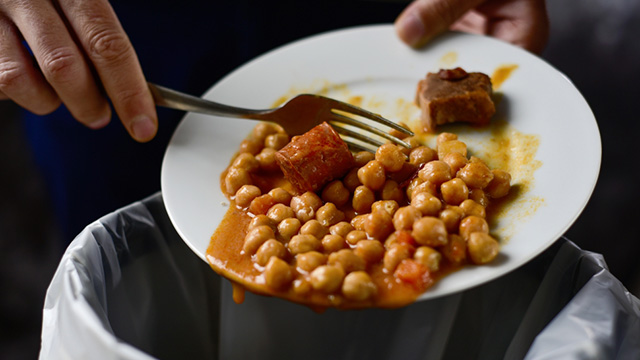

Home
Philosophy
Food Waste
Hunger
Facts and Statistics
Prevent Food Waste
Get In Touch With Us
Food Waste
What is Food Waste?
Food waste alludes to food that has been deemed appropriate for human consumption
that ends up being binned or discarded, regardless of whether the food has expired or not.
Food waste is a process that mainly occurs in the retail and consumptions stages in the food supply chain,
but this is not limiting to the other stages of the food supply chain that food waste may occur in.
Examples of Food Waste Include:
- Discarded leftovers from a meal.
- Expired/stale food.
- Blemished fruits & vegetables.

What is Food Loss?
Food loss refers to the food that is either spilt, spoilt or lost,
this mainly takes (but are not limited to) place during the production, post-harvesting,
processing and distribution stages of the food supply chain.
The food is either deemed unfit for human consumption and/or doesn't meet certain production standards.
Examples of Food Loss Include:
- Overproduction of Food.
- Food that does not pass vital Food quality tests.
- Food that comes into contact with unsafe or unsanitary things.

What is Food Wastage?
Believe it or not, the terms food waste and food wastage do not mean the same thing.
Food wastage refers to any food lost by deterioration or waste through the food supply chain.
The expression of food wastage is a culmination of the definitions of food waste and food loss.
Return to the Homepage